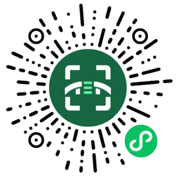
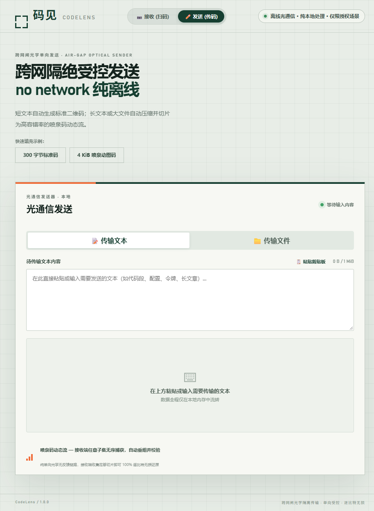
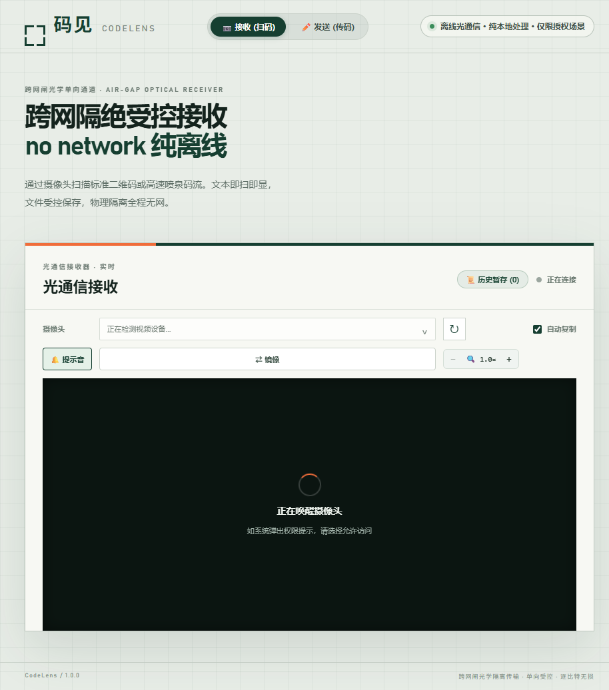
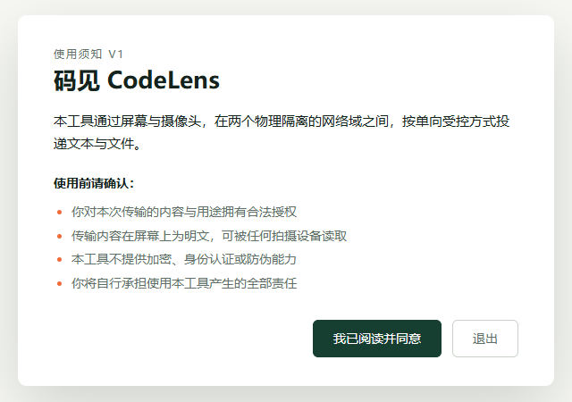

Air-gap optical transfer · 纯本地处理
内容越过边界，不经过任何网络。
码见把文件变成屏幕上的二维码，让另一台设备的摄像头把它读回来。 全程只有光，不联网、不登录、没有服务器，也没有任何一条数据被上传。
v0.1.1-beta · Windows 10/11 x64 · 未签名应用
光通信链路OPTICAL LINK
发送域SCREEN / GENERATE
接收域CAMERA / RECEIVE
链路类型 光学 / 空气隔离
出口 无
01 / 传输
三步，把文件送过去
发送端和接收端可以是两台完全不同的机器：一边在完全断网的机器上，另一边也在另一套网络里，只要中间有一块屏幕和一只摄像头。
STEP 01
生成二维码
在发送端贴上或输入要传的文本、拖入一个文件。短内容生成一张标准二维码；长文本和大文件自动切分成动态二维码流，在屏幕上连续播放。
STEP 02
用摄像头扫描
在接收端打开码见，允许摄像头权限，把屏幕上的二维码对准取景框。识别到内容后摄像头会自动关闭，全程不需要手动输入。
STEP 03
核对并取走
接收端显示完整内容，附字节数与 SHA-256 校验值，确认与发送端一致后再复制文本或保存文件。复制后正文随即清空，不留历史。
02 / 下载
三端，同一套协议
Windows 客户端已可用，微信小程序已上线。同一段内容，用哪一端发、用哪一端收都行。
🤖 Android
开发中
原生 Android 客户端正在开发，计划与现有两端共用同一套传输协议。
即将推出📱 微信小程序 · 太阳码
微信里扫一扫，直接拉起小程序，不用搜名字、不用装 App、不用注册。 这是目前最省事的一条路——手机和电脑对着扫，中间什么都不用配。
也可以在小程序里搜索「字越方格」。

03 / 界面
两端各长这样
发送端与接收端是同一套视觉语言，只是把角色换了个位置。



04 / 常见问题